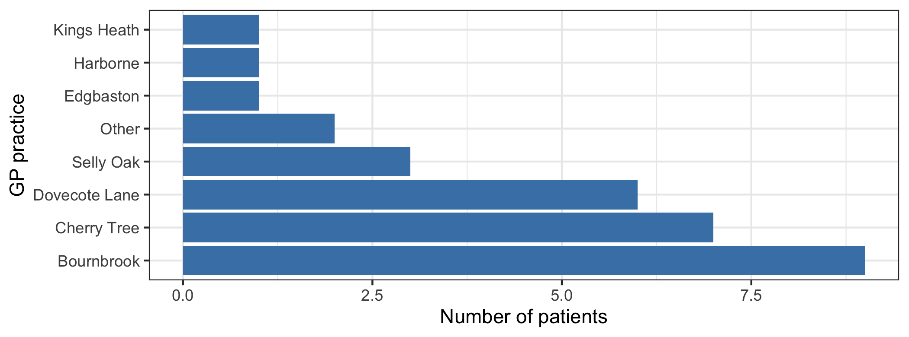
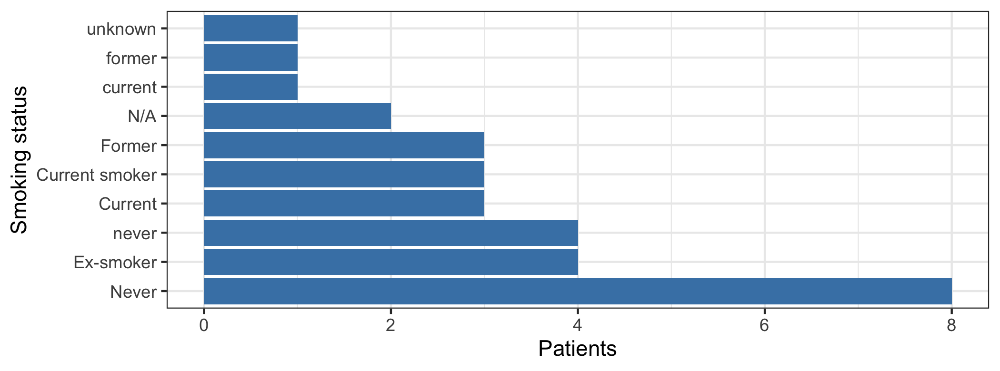
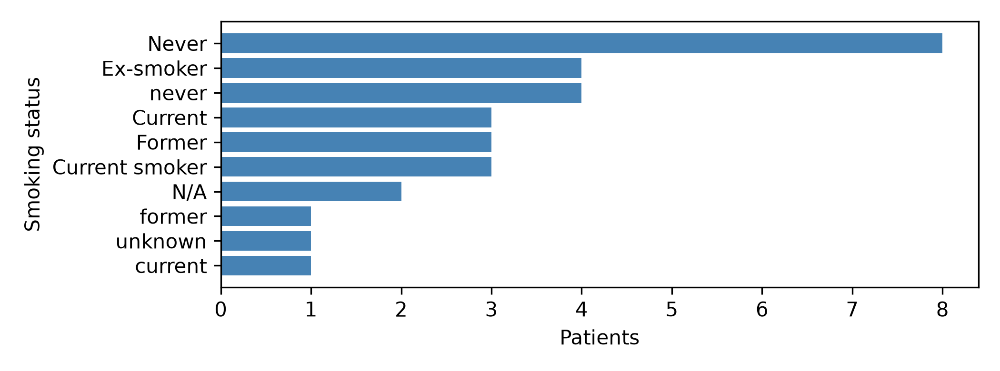

Exercise 2.3 — Exploring and cleaning messy patient data
Note25-30 minutes, in R or in Python
Pick a tab and stay in it. The two tabs are the same exercise — the same steps, the same questions, the same numbers — so work through either one.
Objectives
By the end of this exercise you will be able to:
read a messy extract and say, from its types and summaries alone, what is wrong with it;
correct a value that can be recovered and admit one that cannot;
group rare categories, and say what that costs;
standardise inconsistent labels, and say what happens if you do not;
one-hot encode a categorical variable, count the columns it adds, and decide whether it was worth doing.
The data
messy_gp_patients.csv holds 30 patients from a handful of GP practices, with their age, height and smoking status. It is small enough to read end to end, and it has the problems a real extract has.
#> patient_id GP_practice age height_cm
#> Length:30 Length:30 Min. : 28.00 Length:30
#> Class :character Class :character 1st Qu.: 45.25 Class :character
#> Mode :character Mode :character Median : 56.00 Mode :character
#> Mean : 61.40
#> 3rd Qu.: 67.50
#> Max. :250.00
#> smoking_status
#> Length:30
#> Class :character
#> Mode :character
#>
#>
#>
NoteWhy show_col_types = FALSE
read_csv() normally prints the type it guessed for every column. That is useful, and here it would fill the page, so it is switched off — but the guessed types are exactly what the first question is about, which is why glimpse() comes next.
ImportantThink about it
How many patients and how many variables are there?
Which columns came in as numbers and which as text?
Two values are not ordinary heights in centimetres: unknown, and 1.72 — a height recorded in metres. They need different treatment, because one of them is recoverable and the other is not.
gp <- gp |>mutate(height_cm =na_if(height_cm, "unknown"),height_cm =as.numeric(height_cm),height_cm =if_else(!is.na(height_cm) & height_cm <3, height_cm *100, height_cm) )summary(gp$height_cm)
#> Min. 1st Qu. Median Mean 3rd Qu. Max. NA's
#> 155.0 163.0 170.0 169.6 176.0 183.0 1
Heights now run from 155 to 183 cm, with one missing.
Age
Find the implausible ones rather than assuming you know where they are:
gp |>filter(age <0| age >110)
#> # A tibble: 1 × 5
#> patient_id GP_practice age height_cm smoking_status
#> <chr> <chr> <dbl> <dbl> <chr>
#> 1 P014 Cherry Tree 250 158 Never
gp <- gp |>mutate(age =if_else(age <0| age >110, NA_real_, as.numeric(age)))sum(is.na(gp$age))
#> [1] 1
One patient, P014, recorded at 250.
ImportantThink about it
Why is replacing an impossible age with missing better than replacing it with zero — or than leaving it at 250?
3. Exploring and collapsing the GP practices
How many patients are registered at each practice?
gp |>count(GP_practice, sort =TRUE)
#> # A tibble: 8 × 2
#> GP_practice n
#> <chr> <int>
#> 1 Bournbrook 9
#> 2 Cherry Tree 7
#> 3 Dovecote Lane 6
#> 4 Selly Oak 3
#> 5 Other 2
#> 6 Edgbaston 1
#> 7 Harborne 1
#> 8 Kings Heath 1
gp |>ggplot(aes(x =fct_infreq(GP_practice))) +geom_bar(fill ="steelblue") +coord_flip() +labs(x ="GP practice", y ="Number of patients")

Three practices have a single patient. Combine anything with fewer than three into an Other category:
gp <- gp |>mutate(GP_practice =fct_lump_min(factor(GP_practice),min =3,other_level ="Other"))gp |>count(GP_practice, sort =TRUE)
#> # A tibble: 5 × 2
#> GP_practice n
#> <fct> <int>
#> 1 Bournbrook 9
#> 2 Cherry Tree 7
#> 3 Dovecote Lane 6
#> 4 Other 5
#> 5 Selly Oak 3
ImportantThink about it
How many practices were there to begin with, and how many are left?
Where did the three single-patient practices go — and look carefully, because the answer is not “into a new category”.
What information did you just lose?
4. Cleaning and visualising smoking status
Count the categories as recorded:
gp |>count(smoking_status, sort =TRUE)
#> # A tibble: 10 × 2
#> smoking_status n
#> <chr> <int>
#> 1 Never 8
#> 2 Ex-smoker 4
#> 3 never 4
#> 4 Current 3
#> 5 Current smoker 3
#> 6 Former 3
#> 7 N/A 2
#> 8 current 1
#> 9 former 1
#> 10 unknown 1
gp |>ggplot(aes(x =fct_infreq(smoking_status))) +geom_bar(fill ="steelblue") +coord_flip() +labs(x ="Smoking status", y ="Patients")

Ten different spellings for what are really three categories, plus two codes that mean “not recorded”. Standardise the labels and turn the codes into missing values:
Why was collapsing the rare practices worth doing before encoding?
Would the patient-identifier columns help predict anything about a patient who is not in this table?
So: should every categorical variable be one-hot encoded?
What to take from this
Explore before cleaning. The column types, the frequency tables and the summaries are what told you something was wrong — a height column stored as text, an age of 250, ten spellings of three categories. None of it announced itself.
Cleaning is a sequence of decisions, not a checklist. You corrected one impossible value and admitted another as missing, and the difference was whether the intended value could be known. You grouped three practices and lost their identity to gain columns that can support an estimate.
Encoding is not automatically useful. The same operation that turned a practice into five usable columns turned an identifier into thirty useless ones.
1. First look at the data
Load it and look before you touch anything.
import pandas as pdimport numpy as npimport matplotlib.pyplot as pltgp_py = pd.read_csv("data/messy_gp_patients.csv", keep_default_na=False, na_values=[""])print(gp_py.shape)
#> patient_id GP_practice age height_cm smoking_status
#> count 30 30 30.000000 30 30
#> unique 30 8 NaN 30 10
#> top P001 Bournbrook NaN 178 Never
#> freq 1 9 NaN 1 8
#> mean NaN NaN 61.400000 NaN NaN
#> std NaN NaN 38.603734 NaN NaN
#> min NaN NaN 28.000000 NaN NaN
#> 25% NaN NaN 45.250000 NaN NaN
#> 50% NaN NaN 56.000000 NaN NaN
#> 75% NaN NaN 67.500000 NaN NaN
#> max NaN NaN 250.000000 NaN NaN
NoteWhy those two arguments
pandas treats N/A, NA, null and NaN as missing the moment it reads a file. Here that would quietly convert one of the smoking-status codes before you ever saw it, and spotting those codes is part of the exercise. keep_default_na=False switches that off; na_values=[""] keeps genuinely empty cells missing.
ImportantThink about it
How many patients and how many variables are there?
Which columns came in as numbers and which as text?
Two values are not ordinary heights in centimetres: unknown, and 1.72 — a height recorded in metres. They need different treatment, because one of them is recoverable and the other is not.
#> smoking_status
#> Never 8
#> Ex-smoker 4
#> never 4
#> Current 3
#> Former 3
#> Current smoker 3
#> N/A 2
#> former 1
#> unknown 1
#> current 1
#> Name: count, dtype: int64
counts = gp_py["smoking_status"].value_counts(dropna=False)fig, ax = plt.subplots(figsize=(7, 2.6))ax.barh([str(i) for i in counts.index][::-1], counts.values[::-1], color="steelblue")ax.set_xlabel("Patients")ax.set_ylabel("Smoking status")fig.tight_layout()plt.show()

Ten different spellings for what are really three categories, plus two codes that mean “not recorded”. Standardise the labels and turn the codes into missing values:
spelling = gp_py["smoking_status"].str.strip().str.lower()labels = {**{k: "Never"for k in ["never", "non-smoker", "non smoker"]},**{k: "Former"for k in ["former", "ex-smoker", "ex smoker"]},**{k: "Current"for k in ["current", "current smoker", "smoker"]},**{k: np.nan for k in ["unknown", "n/a", "", "?"]}}gp_py["smoking_status"] = spelling.map(labels)print(gp_py["smoking_status"].value_counts(dropna=False))
#> smoking_status
#> Never 12
#> Former 8
#> Current 7
#> NaN 3
#> Name: count, dtype: int64
Never 12, Former 8, Current 7, and 3 genuinely missing.
ImportantThink about it
Why standardise the labels before encoding or analysing them?
Never and never differed by one capital letter. What would a model have done with them?
The recipe above lower-cases and trims before matching. Why is that order necessary rather than tidy?
5. What happens when you one-hot encode?
Most algorithms need numbers, so a categorical variable has to become numeric somehow. One-hot encoding gives each category its own 0/1 column.
Why was collapsing the rare practices worth doing before encoding?
Would the patient-identifier columns help predict anything about a patient who is not in this table?
So: should every categorical variable be one-hot encoded?
What to take from this
Explore before cleaning. The column types, the frequency tables and the summaries are what told you something was wrong — a height column stored as text, an age of 250, ten spellings of three categories. None of it announced itself.
Cleaning is a sequence of decisions, not a checklist. You corrected one impossible value and admitted another as missing, and the difference was whether the intended value could be known. You grouped three practices and lost their identity to gain columns that can support an estimate.
Encoding is not automatically useful. The same operation that turned a practice into five usable columns turned an identifier into thirty useless ones.